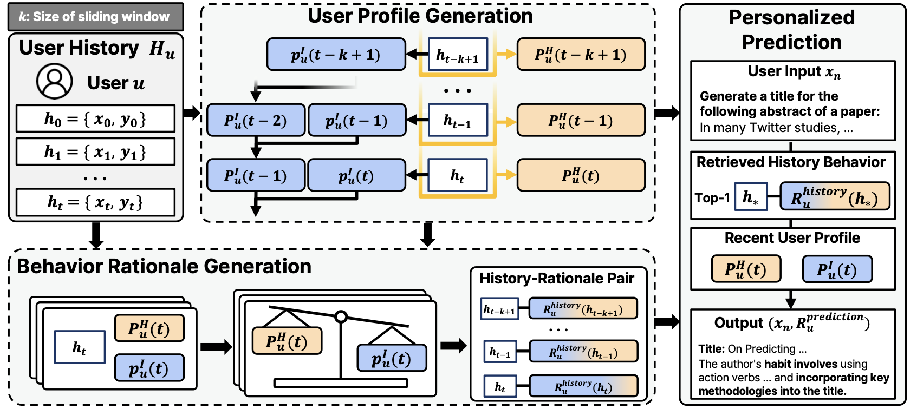

AAAI 2026 · Oral
Modeling users' habits and intentions separately makes LLM personalization more accurate and easier to explain
1Department of Artificial Intelligence, Hanyang University · 2Department of Data Science, Hanyang University · *Corresponding author
Most LLM-based user profiles are built from heuristics: a summary of past behavior with no account of why people act as they do. TRIPLE draws on dual-process theory from social psychology. It keeps one profile for a user's habits and one for their intentions, then writes a rationale for how the two combine in a given situation.
- First author
- User modeling
- Personalization
FIG. 01
The TRIPLE framework

01 / The problem
Personalized services depend on understanding what drives a user's behavior, not only what that behavior looks like. Older approaches embed reviews and ratings into vectors, which work as black boxes and make it hard to check whether a user's reasoning is captured at all.
LLM profiles help, but stay on the surface. Recent methods ask an LLM to write a user profile in natural language: a summary of the user's history (PAG), a list of inferred interests (ONCE), a description of their style (GPG), or structured likes and dislikes (PURE). These are easier to read, but they are empirical. None rests on an established account of why people behave the way they do.
Psychology already has such an account. Dual-process theory separates two kinds of behavior. Habitual behavior comes from actions repeated in stable contexts and runs on automatic responses. Intentional behavior comes from deliberate intentions, which the Theory of Planned Behavior (TPB) traces to a person's attitudes, subjective norms, and perceived behavioral control. The two work together, and which one dominates depends on context.
02 / How TRIPLE works
TRIPLE (Theory-guided Reasoning for Intent and habIt Profiling with LLMs for pErsonalization) builds both kinds of profile with an LLM from a user's most recent k query–behavior pairs, then connects them with written rationales. No model is fine-tuned.
Habitual profile. The LLM reads the whole window of recent history at once and extracts situational cues and the responses that consistently follow them. Older patterns drop out as the window moves, so the profile keeps the habits that are currently active.
Intentional profile. For each past behavior, the LLM infers how the situation led to it in terms of the three TPB components: attitude (the user's positive or negative evaluation of the behavior), subjective norm (perceived social pressure), and perceived behavioral control (how easy or hard the behavior feels). This short-term profile is merged into the long-term one, reinforcing consistent beliefs and revising conflicting ones, much as deliberate beliefs settle over time.
Behavioral rationale. For each past behavior, the LLM explains it in four steps: predict from habit, review that prediction against the intentional profile, classify how well the two agree (match, partial match, partial mismatch, or complete mismatch), and conclude why the behavior happened. When they conflict, the rationale says which intention overrode which habit.
Prediction. For a new query, TRIPLE retrieves the most similar past behavior with BM25, along with its rationale, and gives the LLM the query, both profiles, and that example. The model returns a prediction and a rationale for it.
03 / What we found
We tested TRIPLE on five tasks from the LaMP personalization benchmark: news categorization (LaMP-2N), movie tagging (LaMP-2M), product rating (LaMP-3), news headline generation (LaMP-4), and scholarly title generation (LaMP-5). Profiles are built from past data and evaluated on later data, following LaMP's time-based split. We compared against PAG, ONCE, GPG, PURE, and a zero-shot baseline on three open-source models: LLaMA-3.1-70B, LLaMA-3.1-8B, and LLaMA-3.2-3B (all Instruct).
Largest gains on generation. TRIPLE was best or highly competitive across tasks, and its lead was clearest on the two generation tasks, where it scored highest on ROUGE-1, ROUGE-L, and BLEU with every model. On LaMP-5 with LLaMA-3.1-70B, it reached a BLEU of 11.467, against 7.341 for the next-best method (GPG). These tasks depend on a user's style, which is where an account of habit and intention appears to help most (FIG. 02).
FIG. 02
Main results with LLaMA-3.1-70B-Instruct on LaMP
| Method | 2N Acc ↑ | 2M Acc ↑ | 3 MAE ↓ | 4 ROUGE-L ↑ | 5 BLEU ↑ |
|---|---|---|---|---|---|
| Zero-shot | 0.690 | 0.310 | 0.349 | 0.117 | 4.048 |
| PAG | 0.720 | 0.585 | 0.316 | 0.086 | 1.200 |
| ONCE | 0.795 | 0.535 | 0.358 | 0.087 | 1.380 |
| GPG | 0.735 | 0.580 | 0.322 | 0.106 | 7.341 |
| PURE | 0.725 | 0.325 | 0.405 | 0.106 | 6.627 |
| TRIPLE | 0.795 | 0.610 | 0.280 | 0.180 | 11.467 |
The rationale is what makes the profiles work together. An ablation with LLaMA-3.1-70B shows the habitual profile alone is a strong baseline, and even beats the full model on LaMP-2N. Adding the intentional profile without a rationale lowered several scores compared with habit alone: the two profiles can send conflicting signals, and nothing tells the model how to weigh them. With the rationale added, the full model had the best scores on the rating and both generation tasks (FIG. 03).
FIG. 03
Ablation of TRIPLE's components, LLaMA-3.1-70B-Instruct
| Components | 2N Acc ↑ | 2M Acc ↑ | 3 MAE ↓ | 4 BLEU ↑ | 5 BLEU ↑ |
|---|---|---|---|---|---|
| Raw history (10 most recent) | 0.755 | 0.425 | 0.308 | 2.947 | 4.048 |
| Habit | 0.805 | 0.545 | 0.294 | 4.394 | 10.178 |
| Intention | 0.780 | 0.535 | 0.328 | 2.656 | 9.049 |
| Habit + Intention | 0.790 | 0.648 | 0.290 | 3.810 | 10.484 |
| Habit + Intention + Rationale | 0.795 | 0.610 | 0.280 | 4.994 | 11.467 |
More history keeps helping. We also varied k, the number of past behaviors used. TRIPLE started ahead at k = 1, where there are no repeated patterns to find and the intentional profile carries the prediction. The baselines improved at first and then stalled beyond k = 4. TRIPLE had the best performance at every k and kept improving, especially in BLEU on the two generation tasks, so the gap widened as more history became available.
04 / Reading a rationale
Beyond accuracy, the profiles and rationales are meant to be read. In one LaMP-5 example, a user's habitual profile shows they usually open titles with action verbs such as "Exploring", "Understanding", or "Extracting". The title they actually chose was formal: "On Predicting Geolocation of Tweets using Convolutional Neural Networks". TRIPLE's rationale explains the shift (FIG. 04).
FIG. 04
Behavioral rationale generated by TRIPLE, LaMP-5
"The researcher chose the title 'On Predicting Geolocation of Tweets using Convolutional Neural Networks' due to a combination of habitual and deliberate cognitive processes. Their habitual writing patterns influenced the use of action verbs, but the TPB factors—particularly the subjective norm and perceived behavioral control—led to a more concise and formal title that prioritizes clarity and accuracy. The TPB factors overrode the habitual response to create a title that meets established academic standards and expectations. The final title reflects a balance between creativity and informativeness, aligning with the researcher's values and goals."
05 / Publication
- Title
- TRIPLE: Theory-Driven Integration of Planned and Habitual Behaviors for LLM-based Personalization
- Authors
- Taehyung Noh, Seungwan Jin, Haein Yeo, Kyungsik Han
- Venue
- Proceedings of the 40th AAAI Conference on Artificial Intelligence (AAAI-26), oral
- Paper
- Supplementary
- Video
- YouTube
@inproceedings{noh2026triple,
author = {Noh, Taehyung and Jin, Seungwan and Yeo, Haein and Han, Kyungsik},
title = {TRIPLE: Theory-Driven Integration of Planned and Habitual Behaviors for LLM-based Personalization},
booktitle = {Proceedings of the 40th AAAI Conference on Artificial Intelligence (AAAI-26)},
year = {2026},
publisher = {AAAI Press}
}